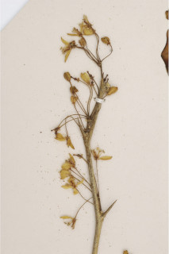
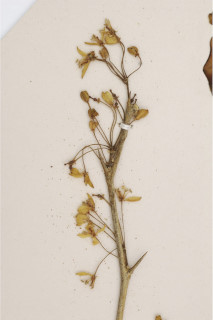

Images :

 



| Habit : | Trees up to 8 m tall. |
| Leaves : | Leaves compound , imparipinnate , to 15 cm long, alternate , spiral ; rachis with oblanceolate wings , glabrous ; leaflets 5-7, opposite , sessile , 2-4.5 x 1-1.5 cm, elliptic to obovate , apex emarginate or obtuse , base acute , margin crenulate or irregularly serrulate , glandular punctate , glabrous ; secondary_nerves 7-10 pairs, looped near margin; tertiary_nerves admedially ramified . |
| Inflorescence / Flower : | N/A |
| Fruit and Seed : | N/A |